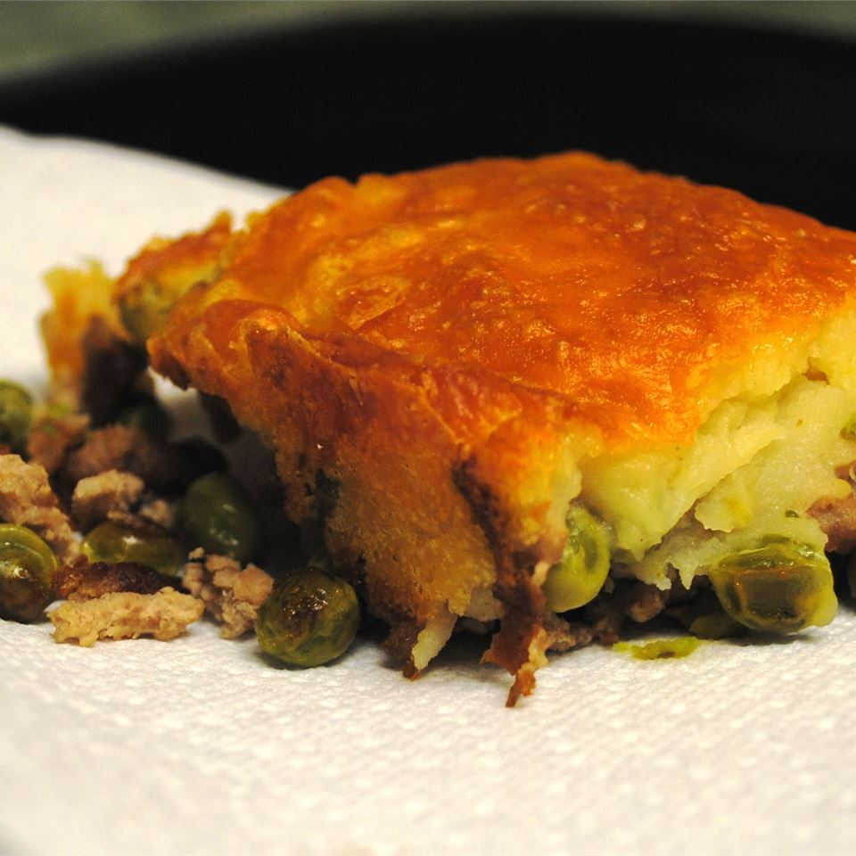

Shepherds Pie

Description
A shepherd's pie is basically a casserole with a layer of cooked meat
and vegetables, topped with mashed potatoes, and baked in the oven until
the mashed potatoes are well browned.
Ingredients
- 1 pound ground beef
- 1 (14.5 ounce) can green beans, drained
- 1 (10.5 ounce) can cream of mushroom soup
- 1/2 onion, diced
- 1 cup shredded cheddar cheese
- 2 cups mashed potatoes
Steps
- Preheat an oven to 350 degrees F (175 degrees C).
- Cook and stir ground beef in a skillet over medium-high heat
until beef is browned, about 10 minutes. Drain fat.
Mix in green beans, cream of mushroom soup, and onion.
- Pour beef mixture into a 2 quart casserole dish and top
with cheddar cheese. Spread mashed potato on top.
- Bake in preheated oven until the pie is hot, and the mashed
potatoes are golden brown, about 30 minutes.